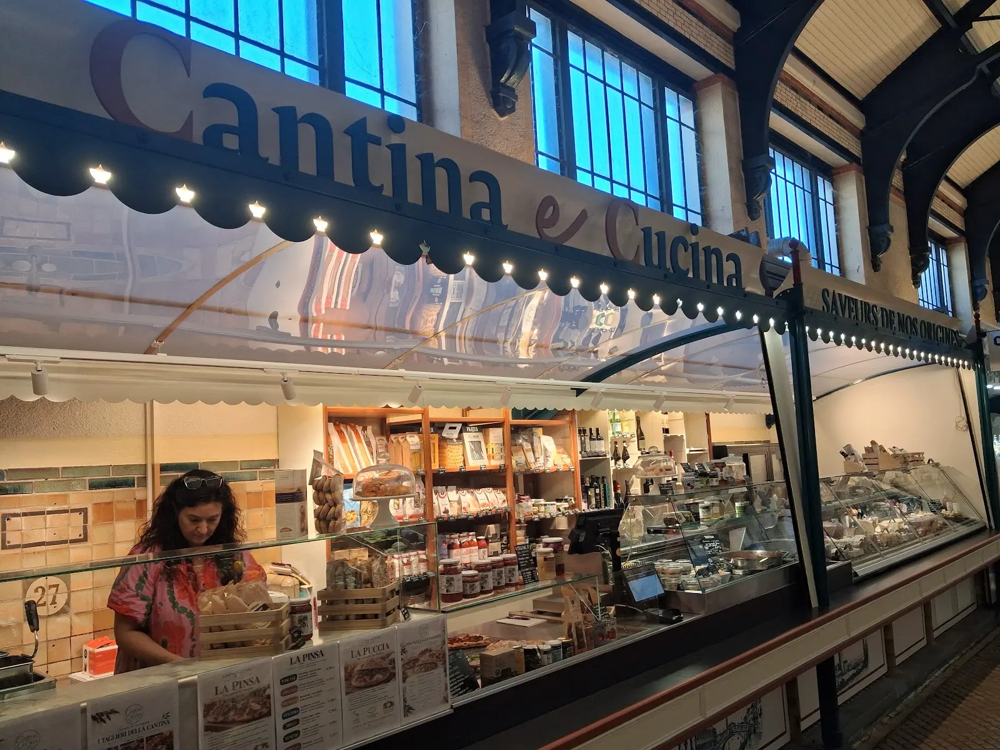
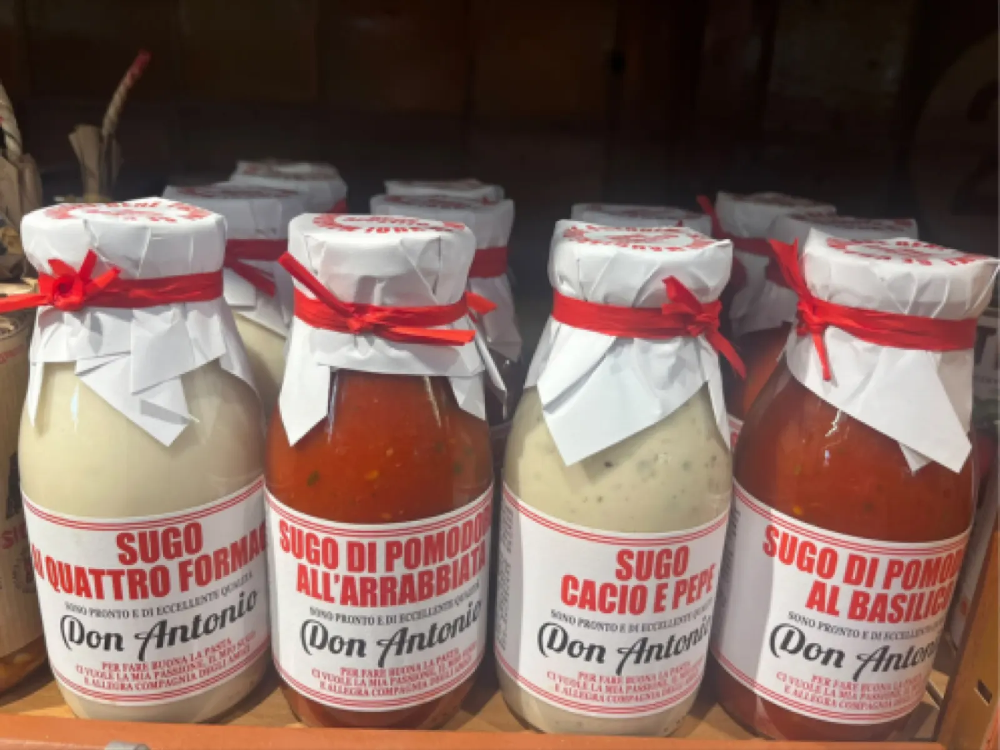
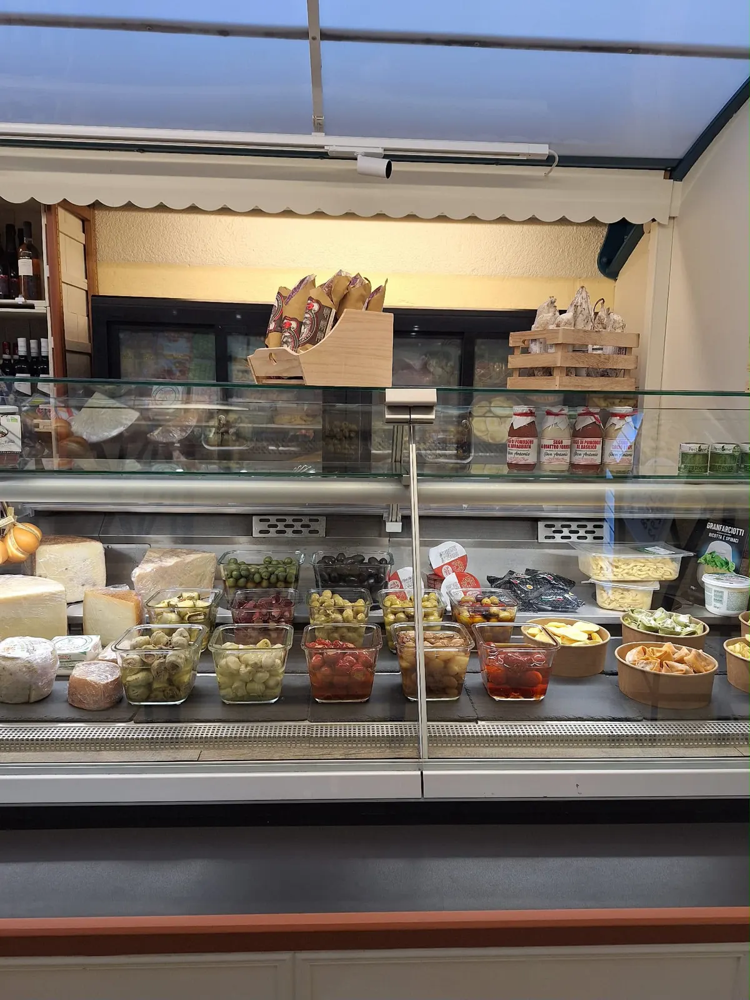
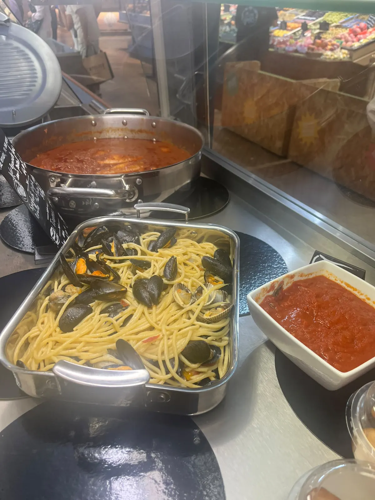
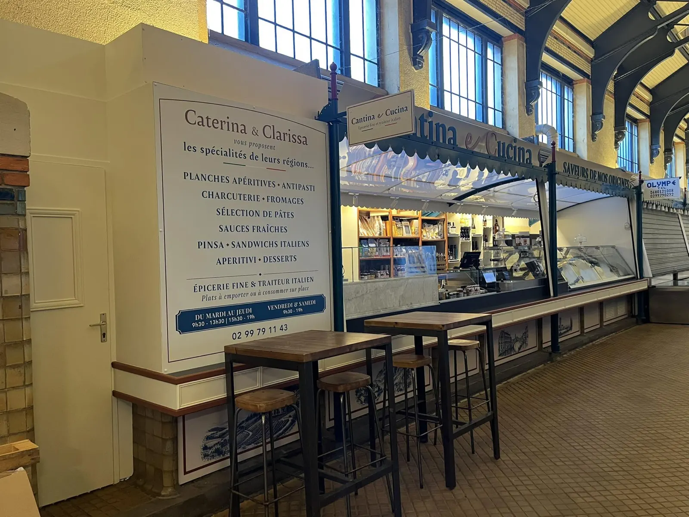
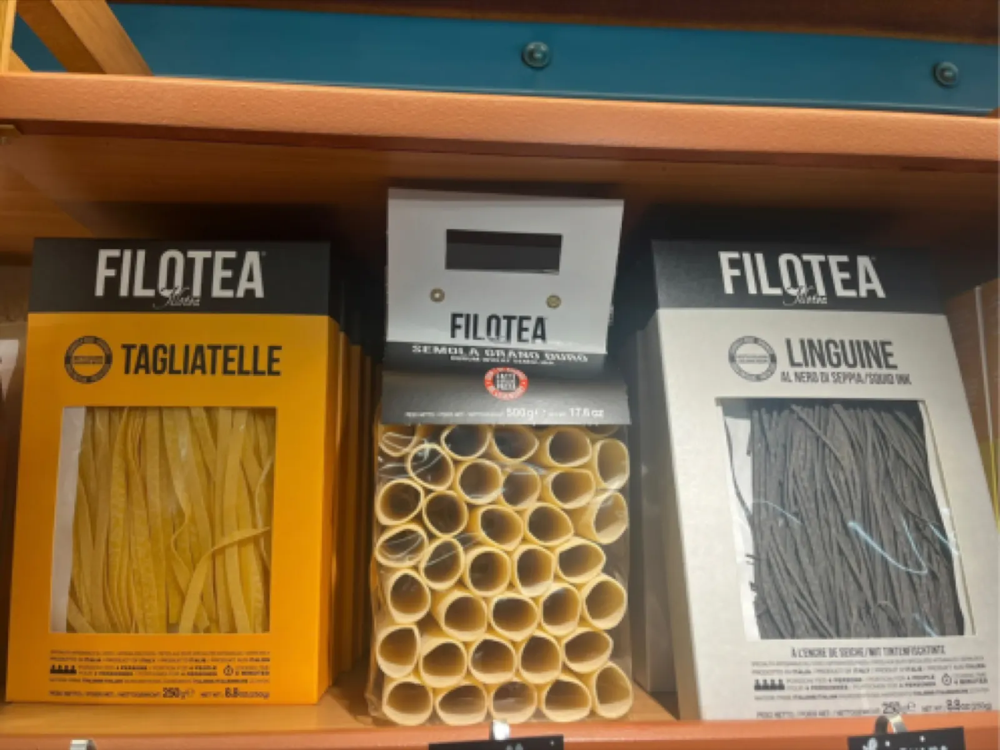
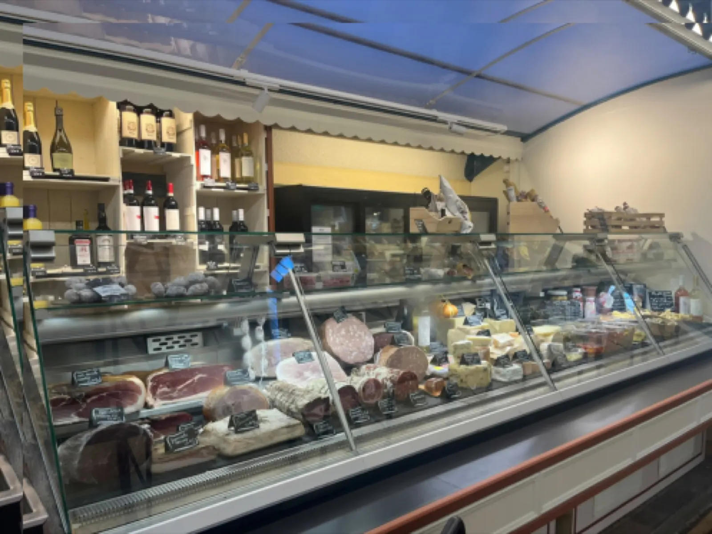
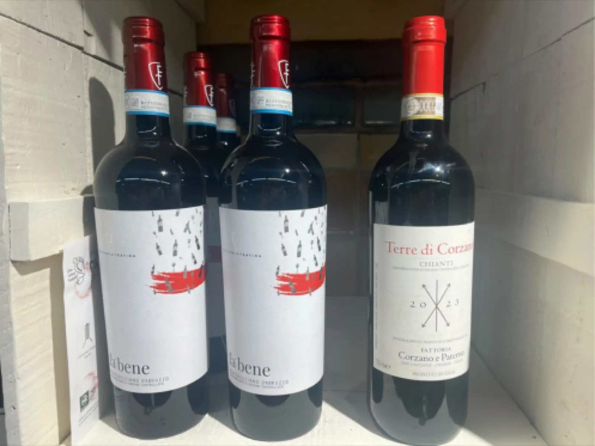
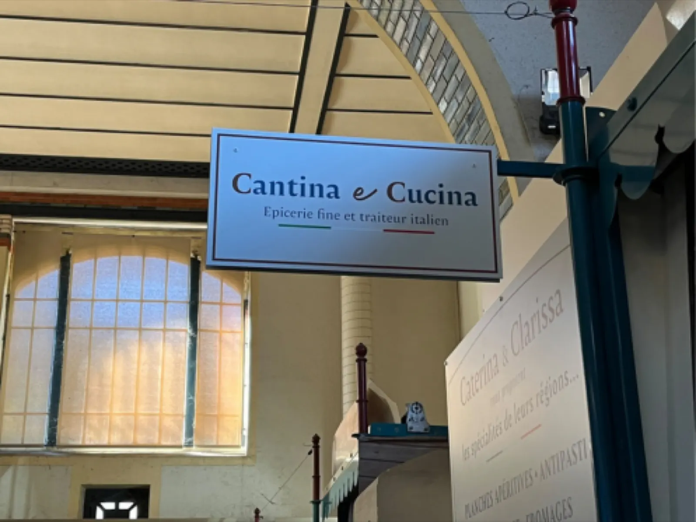

Les saveurs de nos origines, aux Halles de Rennes.
Épicerie fine et traiteur italien. Fait maison, petits producteurs : Caterina et Clarissa vous proposent les spécialités de leurs régions, à emporter ou à déguster sur place.
5,0 sur Google · 16 avis

- Halles centrales de Rennes
- Fait maison
- Petits producteurs
- À emporter ou sur place
- Du mardi au samedi
Au comptoir, les spécialités de leurs régions
Planches pour l’apéritif, produits à la coupe, de quoi cuisiner à la maison ou manger sur le pouce : l’épicerie fine et le traiteur italien, au même comptoir.
Plats à emporter ou à consommer sur place, aux tables hautes du stand.

Antipasti et fromages

Les tables hautes du standUn stand sous la verrière des Halles
Cantina e Cucina vous attend aux Halles centrales, place Honoré-Commeurec. On y passe pour remplir son panier d’épicerie fine, emporter un plat du traiteur, ou s’attabler un moment.
Horaires
- Mardi au jeudi
- 9h30 – 13h30
15h30 – 19h - Vendredi, samedi
- 9h30 – 19h
- Dimanche, lundi
- fermé
Dans les rayons
Des pâtes, des sauces, des vins italiens et la vitrine de charcuterie et de fromages à la coupe : l’épicerie fine se choisit sur place.



Passer au stand
Le stand vous attend aux Halles centrales, du mardi au samedi. Pour une question, appelez directement le comptoir.

- Téléphone
- 02 99 79 11 43
- Adresse
- Halles centrales
2 place Honoré-Commeurec
35000 Rennes - Horaires
- Mardi au jeudi9h30 – 13h30, 15h30 – 19hVendredi, samedi9h30 – 19hDimanche, lundifermé
- Avis
- 5,0 sur Google, 16 avis